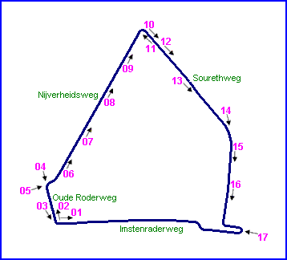

Type: Street Circuit
Length: 3.790 Miles // 6.100 km
Used: 1987-1988
Photographs Taken: 9th April, 2004
|| Contents | Oude Roderweg | Nijverheidsweg | Sourethweg || Home ||
Click on the hyperlinks above to view photographs of that
section.
The numbers and arrows on the map represent the location and direction of where
each of the photographs were taken.

Photographs & Text kindly supplied by Roelard Smit.